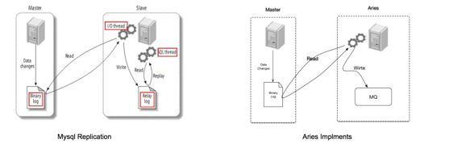

亿级场景下：Binlog在中通的应用
一、背 景
Aries 是中通自研的一款MySQL增量日志实时分发平台，目前在中通内部已经实现大规模使用。
异构系统之间的数据同步是普遍存在的现象，如何保障同步的稳定性? 如何保证数据的数据一致性? 出现问题后如何回溯？源自对于业务上遇到的问题，我们开发设计了Aries。
二、实现原理
Aries实现了 Dump协议，把自己伪装成Slave，向Master拉取 BinaryLog，进行数据处理后发送到对应的消息中间件。

Aries是基于MySQL5.6 的 GTID实现。GTID是集群内全局唯一的，表示为server_uuid:transaction_id。
server_uuid表示当前实例的唯一标志，transaction_id表示当前事务的标志，一般情况下都是递增的。采用GTID是为了规避主备切换过程中向前回溯的问题，当一条事物产生时，只有对应的主实例的transaction_id 会增加，相关的备机是不会产生变化的，而使用binlog File + position 的方式主备都是需要发生变化的。
三、整体架构
Aries分为3大块，Aries Ops 负责任务的配置、初始化调度及监控配置等，Aries Node负责节点上的任务执行及管理，监控节点、任务执行、积压数量及告警。
市面上开源的binlog的解决方面并不多，阿里开源的Canal是应用比较广泛的。我们开发的Aries 和 Canal 在设计上有所不同， Canal是Server ->Client的模式，我们是直接Server->MQ.Canal不支持GTID，Aries是基于GTID实现的。
Aries的监控告警模块更加丰富，提供多角度监控，监控执行机器的状态，任务的状态，任务的执行的TPS，任务的积压情况，单位时间窗口内是否发生的事务（通过这个反推业务是否发生异常）。Aries 通过GTID的实现能保障在VIP+MHA架构下的主备自动切换，过滤数据库大事务等。
四、应用场景
Aries在中通广泛应用在MySQL数据同步ElasticSearch、业务逻辑处理、更新缓存、数据归档、实时统计等几个方面。
- MySQL数据同步ElasticSearch
中通的订单中心日均处理2000w的订单，分库分表存储到MySQL上，做Sharding解决了数据的存储及以分库分表键查询的性能，同时也带来了以其他纬度查询的全表扫描的痛点，解决这样的痛点我们引进了ElasticSearch。写db的时候也同步写一份es，这样解决了查询的问题。如何写db又写es呢？一般存在几种方法：
1. 同步双写
在写db的时候同时写es，对于订单这种要求性能吞吐量较高的服务俨然是不合适的。双写需要考虑写db成功了写es失败如何处理、数据的补偿等一系列问题，增加了业务复杂度。
2. 基于binlog异步写
业务只需关心自己的业务逻辑，不必考虑写es。Aries负责监听binlog 将变更的数据同步写到es中，各种复杂的处理逻辑都不需要侵入业务逻辑中，且保障数据的最终一致。
- binlog 在业务处理中的应用
对于物流订单来说，用户在下单的时候填写了发件地址、收件地址，而在实际运输过程中我们需要知道这笔单子的收件网点、收件业务员、派件网点、派件业务员。这种场景我们是让用户先下单，后续通过监听binlog后续补全信息。
- 实时统计
在中通我们还通过监听binlog 统计不同渠道、合作商的实时的订单量，来做一些实时的统计服务。
- 数据归档
对于日均2000w+的订单来说，一段时间后MySQL会达到瓶颈，物流订单的数据生命周期一般在2周内，我们的做法是保留近6个月的活跃数据，历史数据归档进HBase.我们通过binlog做实时归档，清除历史数据时通过Aries 提供的剔除大事务屏蔽产生的binlog日志。
- 数据同步
订单数据最终都是要提供大数据部门进行挖掘分析的。数据如何同步给大数据部门呢？我们也是通过Aries 提供的binlog服务将数据实时流向大数据部门。
五、总 结
Aries Binlog在中通多个业务线上成功实践，有效的解决了异构系统之间的同步及业务处理的异步操作动作，降低了原本业务代码的复杂度。如果你遇到我们上面提到的一些场景，可以尝试使用binlog哦。如果你想了解Aries的实现细节，欢迎沟通。
文章来自： 中通科技技术工具部 ——部门致力于基础工具、能效工程设计开发工作，提供调研、计划、开发、测试、运维等各个环节上的工具支持，加速业务开发迭代及保障能力，目前主要聚焦在DevOps 、数据库运维平台、数据迁移及实时同步等相关领域工具开发。